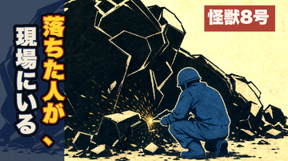

このゲートは「合格させるため」ではなくズレを見つけるためのものです（機械では止めません）。落ちた事実と読者の言葉を、判断材料としてそのままお見せします。
閉じた地点＝6分半・五段目「隣人において富む／隣の一人に先に渡してみる」。「一段目から六段目まで延々続くと分かった時点で、易経の話じゃなくて自己啓発の箇条書きを聞かされている気になって閉じた」。／3秒で指は止まる（stopped_at_3sec=true）・信じられる78・自分の話72＝入口は効いている。
あなたが最初に言われたのは「1〜6段目の説明をしているときに、これって何の話をしているんだろう」でした。私たちはそれを宛先が不明と解釈して、宛先の名指し・時間の線・段マーカー・六爻図で直しました。採点表ではそれで92点になりました。
ところが読者が閉じた理由はもう一段深いところにありました：六段の中身が「三千年前の権威で普通のライフハックを言っている」ように受け取られている。宛先が分かっても、内容がライフハックに見えたら閉じる、ということです。

採点表 84点（不合格） ↔ 読者 74点（合格）。読者はいいねを押す・人に送ると答えました：「二次で落ちて、今その業界の下請けで働いてる高校のときの友達に『これお前じゃん』って一言つけて送る」
ただし違和感も具体的です：
①「落ちた人」が瓦礫の絵と重なって落下した人＝怪我人かと思い、0.5秒意味が迷子
②タイトルの「小畜」が読めない＝読めない字が入っているとスピリチュアル系かと指が一回引く
③360pxで「現場にいる」の白が細く背景に沈み、黄色の「落ちた人が」しか目に入っていない
④絵は好き・青い人の背中で怪獣8号だと分かる・変な矢印や赤丸がないのは信用できる
| 要求 | 状態 |
|---|---|
| 本編（final-video） | ✅ 承認済み・mix警告0 |
thumbnail:youtube-long | ✗ 採点表90必須／現在84（＝私が前に「84点で公開できる」と言ったのは誤りでした） |
long-hook:youtube-long | ✗ 未登録（冒頭9秒の設計を登録して採点） |
title:youtube-long | ✗ 未登録（タイトルは確定済み） |
| YouTube認証 | 要確認（.yt-token.json なし・旧uploaderトークンで解決できるかは実行時に判明） |
読者が閉じた場所そのものです。方向は「六段の実践を全部並べる」のをやめ、爻の言葉そのものが持つ意外さ（三爻＝夢の話が家の中の喧嘩に化ける／上爻＝降った直後が一番危ない）を前に出し、私の一手は2〜3箇所に絞る。あわせて②のカフカ回収も直す（「作品の一番大事なところを伏せている」＝信用の毀損）。音声・字幕・レンダをもう一周（約30分）。
②カフカ回収と③「最後にお話しします」の引っ張りだけ直す。幕5の構造は触らない（＝ライフハック感は残る）。作り直しは同じく約30分。
読者ゲートは機械では止めません。66点という数字と違和感を記録に残したまま、サムネ90点化と long-hook/title の登録に進む。
読者が0.5秒迷子になった「落ちた」の多義を消す（例：「受からなかった人が、／現場にいる」）。白の行が沈む問題も同時に直す。
記録：analytics/blind-reader.jsonl（sh47-50の4本＝内側90-92 vs 読者73-80、今回のep47本編66・サムネ74）。この乖離の傾向はショートでも一貫して10〜20点あり、ep47本編の26点はその中でも最大です。